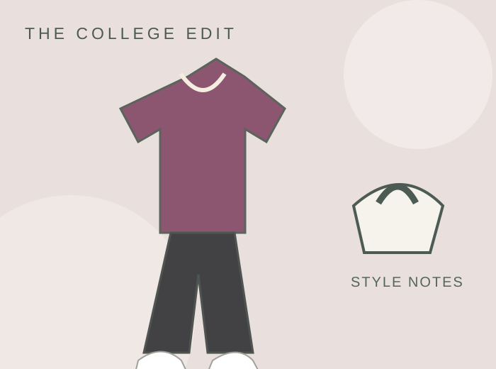
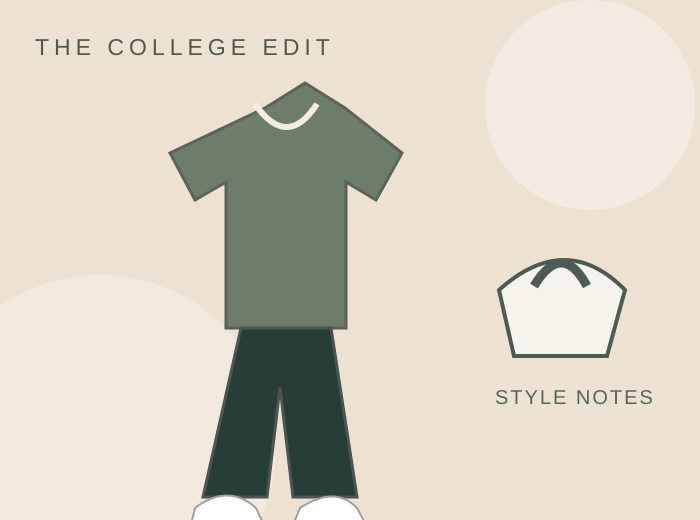
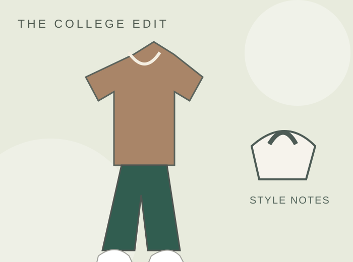
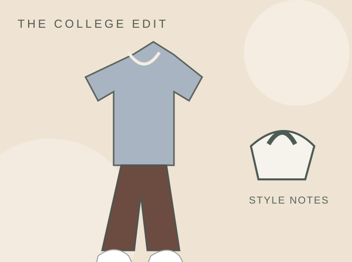

College outfit ideas
Style for every side of college life.
Your closet should work as hard as you do. Find outfit ideas for class, football Saturdays, going out, and the changing seasons—all with budget-friendly swaps that feel like you.
Explore game day looks
Outfit inspiration by occasion
Choose a guide to start with what you already own and create a look that feels comfortable, practical, and personal.


Make your closet work harder
Great outfits begin with pieces you enjoy wearing. Mix basics with favorite statement items, borrow for occasional events, and explore seasonal college outfit ideas to keep your wardrobe useful year-round.